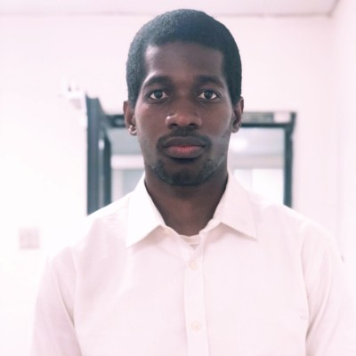
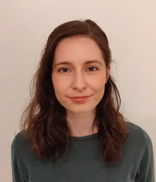
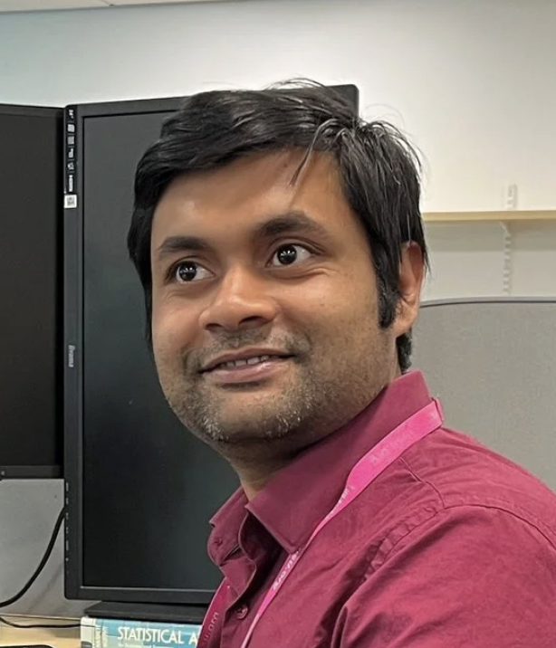
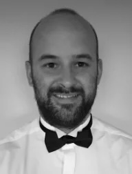
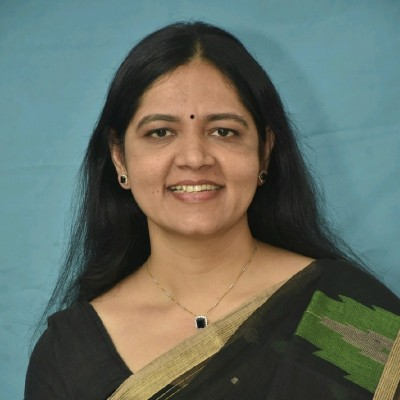
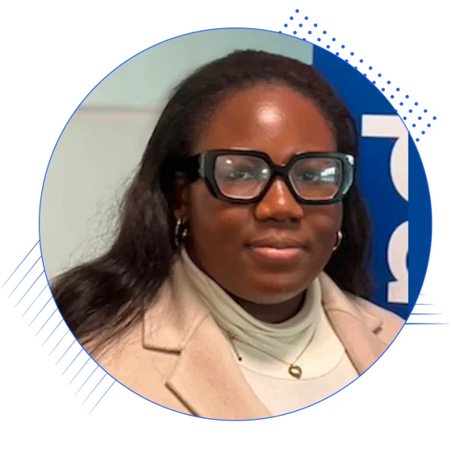
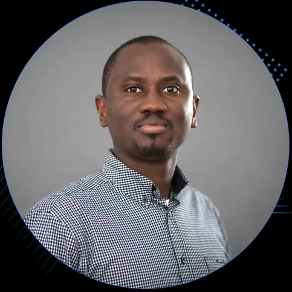

| |
|
|
|
Intelligent Systems Research Centre
Ulster University (Derry~Londonderry Campus)
Seminar Series
Seminars usually take place from 12.30-1.30pm on Wednesdays in person the MS building board room (MS105) and/or streamed online via Microsoft Teams. Contact Cian O'Donnell or Louise Gallagher for more information.
Seminar archives: 2024/25, 2023/24, 2022/23.
PLEASE NOTE that photographs and/or video footage may be taken at these events. This footage could be used by the University for marketing and publicity, including but not limited to, publications, campaigns, social media and on our website. Please contact the event organiser in advance of the event if you have any concerns or if you wish to opt out. For further information on how we process photographs and/or video footage. Please visit our Marketing and Communications Privacy Notice.
Spring 2026
11am 12/01/26: Patricia Rubisch (Medical School Berlin, Germany)
MS Teams link for seminar
Webpage
Google Scholar
I am a PostDoctoral researcher in the group of Melanie Stefan at Medical School Berlin working on computational models of synaptic plasticity. My research interest is focused on the biological processes of learning. I hope to elucidate the role of temporal-spatial signalling of the various actors within the plasticity cascades in health and disease. My approach uses multi-scale models including biochemical reaction system and electrophysiology in order to translate the highly detailed biologically-plausible models and results into functional learning rules suitable for large network simulations. I studied functional development in spiking neural networks during my PhD at the University of Edinburgh under supervision of Matthias Hennig.
From behaviour to proteins: Modelling learning at different scales
In this talk, I am going to give an overview of my research. It starts at the behavioural comparison between DNNs and human object detection up to my most recent projects focused on protein synthesis.
In-person seminar.
10am 11/02/26: Seun Awonuga (Smart Manufacturing Data Hub)
MS Teams link for seminar

Webpage
LinkedIn
The Smart Manufacturing Data Hub (SMDH) supports small and medium-sized manufacturers to become more competitive by harnessing the power of data.
Title: Helping SMEs to understand the value of data sharing through data co-operative model and innovative digital technologies
Abstract TBD.
In-person seminar.
11am 25/02/26: Sarah Butter (UU School of Medicine & School of Psychology)
MS Teams link for seminar

Webpage
Google Scholar
Sarah Butter is a Lecturer in Psychology at Ulster University, teaching in both the School of Psychology and the School of Medicine. Sarah completed her PhD at Ulster University in 2019 before working as a postdoctoral researcher at a number of institutions: Administrative Data Research Centre at Ulster University; the Stress, Trauma & Related Conditions lab at Queen’s University Belfast; and on the ESRC-funded COVID-19 Psychological Research Consortium Study at The University of Sheffield. Since 2022, Sarah has worked as a lecturer in psychology at Ulster University.
Title: An introduction to Open Research Practices
Abstract TBD.
In-person seminar.
Autumn 2025
08/10/25: 2x ISRC speakers
MS Teams link for seminar
Ravi Jha (ISRC, UU)
Google Scholar
Quantum Machine Learning: Benchmark and Application
Quantum machine learning (QML) is an active research area exploring quantum-enhanced solutions for real-world problems. While quantum advantages have shown promise, they remain difficult to generalize, particularly in ML. A key foundation for demonstrating such advantages is the theory of quantum kernels. In this talk, I cover a detailed analysis of the quantum kernel approach, leveraging feature maps and relevant hyperparameters to develop quantum-enhanced ML models. This included presenting a novel high-order feature map and a comparative evaluation of distinct SOTA feature maps on distinct benchmark datasets for classification tasks. Additionally, the importance of hyperparameter tuning is emphasized, as it improves performance by capturing complex data patterns and enabling superior decision boundaries. Furthermore, the designed QML model is extended to brain data analysis. I introduce SNN-QC, a novel hybrid computational framework combining neuro-inspired information processing using SNNs and quantum kernels for quantum information processing. SNN-QC, as proof of concept, is demonstrated on a smaller EEG dataset to classify wrist movement tasks, emphasising the advantages of the proposed feature map. SNN-QC applicability is demonstrated on quantum hardware using both a superconducting IBM QPU and a high-fidelity noisy simulation, along with a noise analysis. The results show that SNN-QC, as a proof of concept, provides a potential pathway toward developing quantum-enhanced models for a broader class of spatio-temporal problems.
Sources:
1. A Hybrid Spiking Neural Network-Quantum Classifier Framework: A Case Study Using EEG Data, 21 March 2025, PREPRINT. https://doi.org/10.21203/rs.3.rs-6173906/v1
2. Performance Analysis of Quantum-Enhanced Kernel Classifiers Based on Feature Maps: A Case Study on EEG-BCI Data. International Conference on Neural Information Processing. Singapore: Springer Nature Singapore, 2024. https://doi.org/10.1007/978-981-96-6579-2_25
Sanjoy Saha (ISRC, UU)

Webpage
Health Monitoring and Drift Detection of Cryogenic Pumps for Smart Semiconductor Manufacturing
Semiconductor manufacturing involves several critical steps, wherein maintaining an ultra-high vacuum is essential. In industry, this environment is typically achieved using cryogenic pumps. Due to operational loads and material aging, the health of pumps starts deteriorating over time. A sudden vacuum malfunction can lead to processing chamber contamination and disrupt production. However, a prognostics and health management (PHM) framework can be utilized to enhance system safety and reliability through continuous health monitoring, drift detection and accurate prediction of remaining useful life (RUL). For health degradation or drift detection, densities of reference and test windows are calculated to find dissimilarity score using direct density ratio estimation (DDRE). Moreover, DDRE-based change score is used for distinguishing steady drift and progressive or runway failure. Additionally, to validate the effectiveness of the DDRE algorithm, experiments have been conducted using publicly available rolling bearing datasets.
In-person seminar.
22/10/25: Raymond Bond (School of Computing, Ulster University Belfast)
MS Teams link for seminar

Webpage
Google Scholar
Raymond is a Professor of Human Computer Systems at Ulster University, and has research interests in digital health, medical informatics and human-computer interaction. Specific interests include: 1) healthcare data science and machine learning, 2) the design and evaluation of digital health interventions (e.g. health apps and chatbots) and 3) clinical decision making with artificial intelligence. He is a Senior Fellow of the Higher Education Academy and is an Ulster Distinguished Research Fellow. He currently lectures on topics related to data science, machine learning and AI.
Taking human wellbeing seriously in an AI summer
In this talk, I will discuss my background and the various research activities I have been involved in, including digital health/wellbeing, clinical decision making, eye tracking, HCI, applied AI/machine learning and health data analytics. However, I will likely relfect on the basics of AI and humanity which I think are important. This includes considering what human wellbeing is and whether AI can help or hinder human flourishing/eudaimonia. This may include considering the self-determination theory, Maslow's hierarchy and a positive psychology model called PERMA. I am not an expert on these theories, but it is important for computer scientists to perhaps take a wellbeing centric approach when building digital technologies and assess their impact on human flourishing.
In-person seminar.
11/11/25: Bronagh Lanigan / Donnacha Kirk / Kyle Madden / Matthew Manktelow / Patrick McGirr (AICC)
MS Teams link for seminar
Webpage
Backed by Invest NI and the Department for the Economy, the AICC aims to position Northern Ireland as a global leader in AI-driven innovation across key sectors. By connecting industry, academia, and government, the AICC fosters collaboration to co-develop AI solutions. The AICC offers fully funded hands-on support, education and upskilling opportunities, while building a dynamic AI community through events, research and innovation.
- Bronagh is a Research Fellow at the AICC, where she brings specialised expertise across all aspects of AI, delivering cutting-edge training and AI solutions to industry and academic partners. She spearheads advanced research and development projects, driving innovation through collaboration within the Centre and beyond. Bronagh graduated with a BEng in Electronics and Computing Systems with First Class Honours from Ulster University in 2016. She pursued her PhD at the Pervasive Computing Research Centre, focusing on optimising preprocessing techniques for Human Activity Recognition to support vulnerable individuals through non-invasive monitoring.
- Donnacha is Deputy Director of the AICC, responsible for AI Technology and Research Services. Originally trained as an astrophysicist, he spent a decade working on weak gravitational lensing with NASA and ESA before the bright lights of commercial data science lured him in. Since then he has worked with companies ranging from multi-billion dollar financial investment firms to Korean e-sports teams.
- Kyle is a Research Fellow at the AICC, where he supports Northern Ireland SMEs in accelerating AI adoption through intensive, hands-on collaboration. He specialises in end-to-end data curation, analysis, and applied machine learning, delivering actionable insights for both public and private sector organisations.
- Matthew: With an academic background intersecting the physical, biological and computational sciences, Matthew has a keen interest in the interactions of data, systems, and people, as well as in how insights gleaned from quantitative data can be developed into practical applications to the benefit of organisations.
- Patrick is AICC Deputy Director of Business Engagement. From day one, Patrick has been a critical driving force behind the AICC, shaping our team, streamlining processes, and building key relationships to advance responsible AI adoption across Northern Ireland. He leads on delivering our business engagement vision and strategy, forging stronger collaborations between industry, academia, and government. Patrick holds a Master’s in Engineering (MEng) in Product Design and Development and achieved Chartered Engineer (CEng) status through the IMechE in 2015.
What is the AI Collaboration Centre?
We will give a brief overview of the AICC, a £16.3 million initiative by Ulster University and Queen's University Belfast, which promotes AI awareness and adoption among businesses in Northern Ireland, with a strong emphasis on ethical and responsible innovation. We will cover the main pillars of AICC activity: Skills development; Direct Support to SMEs & developing collaborative R&D opportunities across NI. The team will detail some case studies of SMEs they have worked with before we open the floor to dicuss ideas for potential future collaboration.
In-person seminar.
19/11/25: Mayuri Mehta (Sarvajanik College of Engineering
and Technology, India)
MS Teams link for seminar

LinkedIn
Google Scholar
Dr. Mayuri Mehta is a passionate learner, teacher and researcher. She is currently working as
a Professor in the Department of Computer Engineering, Sarvajanik College of Engineering and Technology, Surat, India. She is also serving as an International Relations and External Affairs Officer, facilitating global collaborations and partnerships to enhance opportunities for students, faculty, and the college community. Additionally, she is heading the AI Task Force at Sarvjanik University, leading efforts to integrate Artificial Intelligence across research, academics, operations, and all university-related activities. Her research interests include AIML, Data Science, Medical Image Analysis, Health Informatics, and Computer Vision.
Trustworthy and Explainable AI in Healthcare: Recent Advances and Research Frontiers
Artificial Intelligence (AI) is transforming the healthcare ecosystem by enabling intelligent, data-driven, and autonomous systems that support clinical decision-making, diagnosis, and treatment planning. However, most machine learning and deep learning models function as black boxes, providing little insight into how conclusions are drawn. Thus, the critical limitation of today's intelligent systems is their inability to explain their decisions and actions to human users. This limitation poses a significant challenge, especially in risk-sensitive healthcare applications such as disease prediction, patient monitoring, and clinical decision support. Explainable Artificial Intelligence (XAI) has emerged as a promising solution to address this limitation, providing interpretability and building trust in AI-driven systems. This seminar will present recent advancements in trustworthy and explainable AI for healthcare, highlighting how XAI methods enhance reliability, accountability, and ethical use of AI through selected real-world use cases.
Online seminar.
26/11/25: Hartree speakers, Jade Osinowo and Abi Adebayo
MS Teams link for seminar


Webpage
The Hartree National Centre for Digital Innovation is a collaborative programme with IBM which will enable businesses to acquire the skills, knowledge and technical capability required to adopt digital technologies like supercomputing, data analytics, artificial intelligence (AI) and quantum computing.
Jade is a Research Associate in Data Science at the Hartree NI Hub, where she brings expertise across several aspects of AI, delivering specialized assists and AI solutions to industry partners. Jade graduated with a BSc in Software Engineering and her MSc in Artificial Intelligence and Data Analytics from Loughborough University.
Abi is a Research Associate in Data Science at the HartreeNI Hub, with over a decade of industry experience spanning telecommunications, fintech, and insurance. He holds a Bachelor’s degree in Statistics, as well as Master’s degrees in Operations Research and Data Science. His work focuses on applying statistical modelling, machine learning, and AI techniques to solve complex business challenges and enable data-driven decision-making. Abi is also a member of the Royal Statistical Society (RSS) and holds the professional designation of Graduate Statistician (GradStat).
What is Hartree NI Hub?
Abstract - Funded by UKRI, Hartree NI Hub assist and enable small and medium-sized businesses to improve productivity and gain a competitive advantage through the adoption of advanced digital technologies such as:
• Supercomputing and cloud
• Data science
• Artificial intelligence (AI) and machine learning
• Visual computing
In-person seminar.
01/12/25: Laura Grima (Janelia Research Campus, USA)
MS Teams link for seminar
Webpage
Google Scholar
Laura Grima is a Research Scientist in the Dudman Lab at the Janelia Research Campus in Ashburn, Virginia. Prior to this position, she completed both a Master’s and DPhil (PhD) at the University of Oxford, with her PhD focusing on the role of mesolimbic dopamine and activity at striatal receptor subtypes on goal-directed action. She became interested in foraging behaviours during a brief postdoctoral position in Oxford, where she found that slow changes in ventral striatal dopamine levels reflected environment quality in trained mice making decisions in a novel operant chamber-based foraging task. In 2019 she moved to Janelia to study the role of dopamine in naïve mice making foraging decisions in large spatial environments.
Dynamics of learning in many option foraging
In natural environments, animals must effectively allocate their choices across many concurrently available resources when foraging. This is a complex decision-making process not fully captured by existing models. In this talk I will describe a novel paradigm that we developed, in which untrained, water-restricted mice were free to sample from six options rewarded at a range of deterministic intervals and positioned around the walls of a large (~2m) arena. Mice exhibited rapid learning, matching their choices to integrated reward ratios across six options within the first session. To develop a mechanistic description of this learning, we constructed an reinforcement learning model inspired by foraging theory. In combination with a dynamic, global (across all options) learning rate, this model was able to accurately reproduce mouse learning and decision-making. Finally, I will discuss results of fiber photometry recordings in the nucleus accumbens core (NAcC) and dorsomedial striatum (DMS). We found that NAcC, but not DMS, dopamine more closely reflected this global learning rate than local error-based updating. Altogether, our results provide insight into the neural substrate of a learning algorithm that allows mice to rapidly exploit multiple options when learning to forage in large spatial environments.
In-person seminar.
|